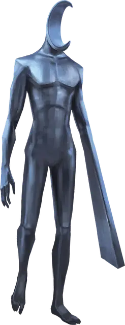

Луносветный защитник
Moonlight Guardian
Средний Конструкт, без мировоззрения

Класс Доспеха 16 (природный доспех)
Хиты 105 (14к8 + 42)
Скорость 30 футов
| мод | спас | ||
|---|---|---|---|
| СИЛ | 19 | +4 | +4 |
| ЛОВ | 9 | −1 | −1 |
| ТЕЛ | 16 | +3 | +3 |
| мод | спас | ||
|---|---|---|---|
| ИНТ | 6 | −2 | −2 |
| МДР | 12 | +1 | +1 |
| ХАР | 6 | −2 | −2 |
Сопротивление урону дробящий, колющий, рубящий от немагических атак
Иммунитет к урону излучение, яд
Иммунитет к состояниям испуг, истощение, окаменение, отравление, очарование, паралич
Чувства истинное зрение 120 футов, пассивное Восприятие 11
Языки понимает язык своего создателя, но не говорит
Опасность 6 (2300 опыта)
Бонус мастерства +3
Особенности
Неизменный облик. Защитник обладает иммунитетом ко всем заклинаниям и эффектам, изменяющим его облик.
Сопротивление магии. Защитник совершает с преимуществом спасброски от заклинаний и прочих магических эффектов.
Поглощение излучения. Каждый раз, когда защитник должен получить урон излучением, он не получает урон, и вместо этого восстанавливает число хитов, равное причиняемому урону излучением.
Действия
Мультиатака. Защитник совершает два Луносветных удара.
Луносветный удар. Рукопашная атака оружием: +7 к попаданию, досягаемость 5 футов, одна цель. Попадание: 8 (1к8 + 4) дробящего урона плюс 4 (1к8) урона излучением.
Луносветный взрыв (перезарядка 5-6). Защитник испускает магический взрыв лунного света линией длиной 60 футов и шириной 5 футов Каждое существо в этой области должно совершить спасбросок Ловкости Сл 14. Существа, не находящиеся в своем истинном облике, совершают спасбросок с помехой. При провале существо получает 22 (5к8) урона излучением и вынуждено принять свой истинный облик, если она не находится в нем, также цель не может менять облики до конца следующего хода защитника. При успехе существо получает только половину этого урона.
Описание
«Сначала я подумал, что это человек, но затем увидел его голову. А затем руку. А потом понял, что нужно бежать.»
— Вертил, кендер-авантюрист.
Луносветный защитники — это сверкающие двуногие статуи, сделанные из серебра и мифрила. Изначально они были созданы отчаявшимся магом на Кринне, который вытянул карту Луны из колоды многих вещей [deck of many things]. Маг пожелал иметь свиту телохранителей, идеально подходящих для борьбы с ликантропами и прочими перевертышами. В ответ карта Луны созадала первого луносветного защитника.
Тело луносветного защитника пронизано магическим лунным светом, который тот может направлять в свои удары. Он также испускает обжигающие взрывы лунной энергии, способные разоблачить перевертышей, заставив их принять свой истинный облик.